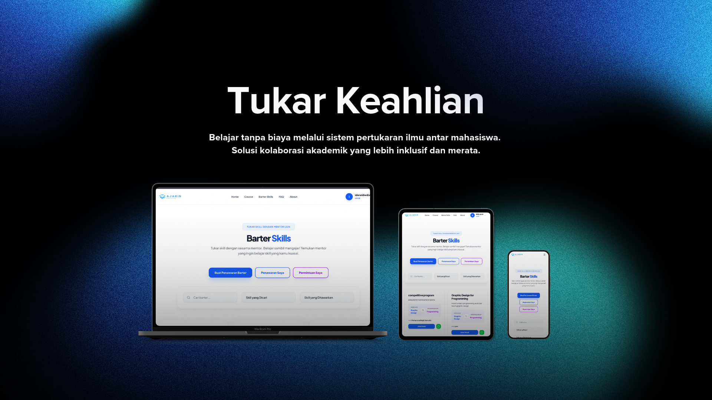
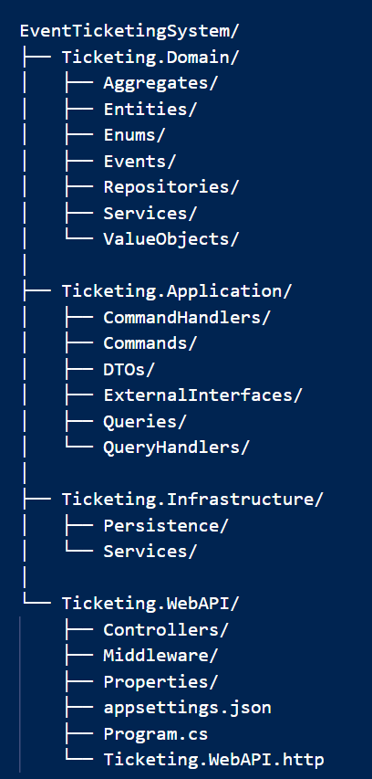
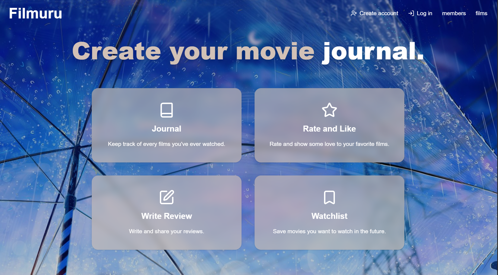
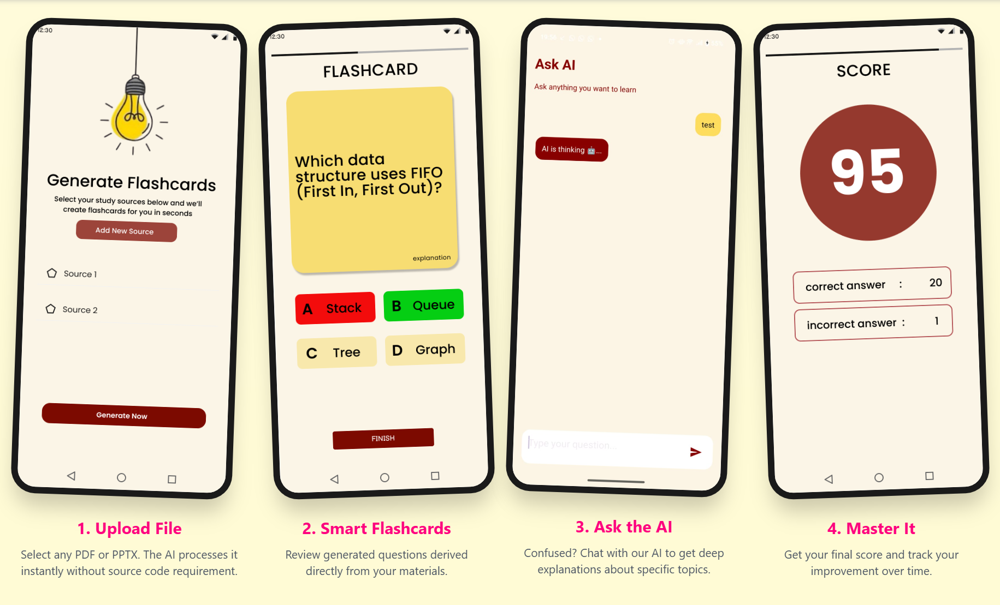
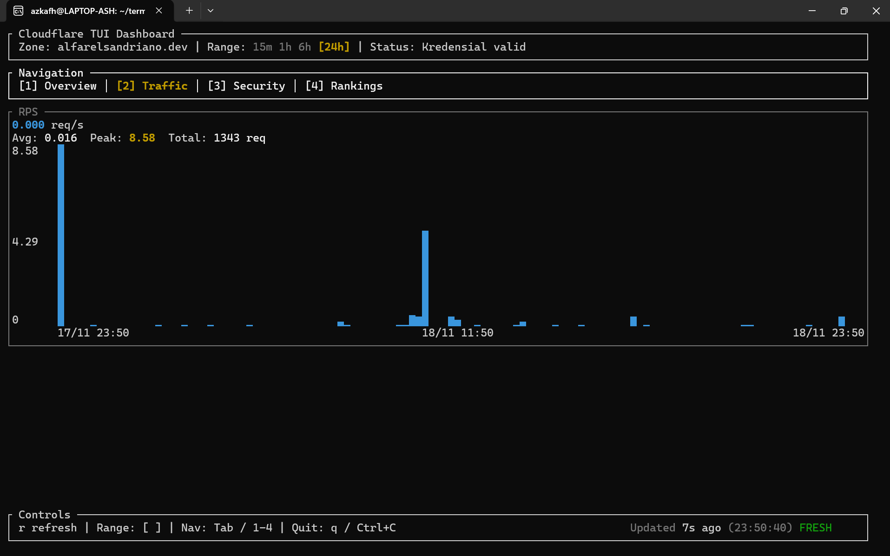

Projects
CONFIDENTIAL
Ajarin
SOLVED

- Role
- Frontend Developer
- Tech stack
- Next.js
- React
- JSON
- TypeScript
- Links
- GitHub
A web-based academic mentoring and peer-to-peer learning marketplace specifically tailored for ITS students to find verified mentors, book tutoring sessions, and exchange skills.
- Key Takeaways
-
- Learned how to structure a scalable frontend architecture using Next.js App Router and implement efficient global state management with Zustand alongside React Query.
- Gained hands-on experience in building a robust service layer using Axios to securely and seamlessly communicate with a Golang backend.
- Mastered responsive design implementation with Tailwind CSS to ensure a consistent, mobile-friendly user experience across laptops, tablets, and smartphones.
Event Management System
SOLVED

- Role
- Developer (Team of 2)
- Tech stack
- C#
- Clean Architecture
- Domain Driven Design
- CQRS
- Links
- GitHub
A comprehensive event ticketing and booking backend system developed for event management, featuring complete user flows from event creation, ticket category configuration, booking reservations with expiration deadlines, payment processing, gate check-in validation, to automated refund workflows.
- Key Takeaways
-
- Gained deep practical experience in enforcing strict separation of concerns across Domain, Application, Infrastructure, and Presentation layers.
- Mastered tactical Domain-Driven Design (DDD) patterns—such as aggregates, entities, value objects, domain services, and domain events—to handle complex business rules securely.
- Implemented the CQRS pattern with distinct commands, queries, and handlers to separate write mutations from read operations effectively.
- Developed robust automated unit tests for domain logic to ensure high maintainability, testability, and adherence to strict domain invariants.
Filmuru
SOLVED

- Role
- Frontend Developer
- Tech stack
- TypeScript
- Next.js
- React
- Tailwind CSS
- Zustand
- REST API
- Links
- GitHub
A web-based personal movie journal and discovery platform (inspired by Letterboxd) that allows users to track watched films, rate and like favorites, write and share reviews, manage watchlists, and browse a films catalog.
- Key Takeaways
-
- Implemented efficient client-side global state management using Zustand to handle user sessions, watchlists, and review states smoothly across views.
- Translated modern UI aesthetics (such as glassmorphism cards and responsive grid layouts) into clean, reusable React components using Tailwind CSS.
QuizITS
SOLVED

- Role
- Full Stack Developer
- Tech stack
- Java
- Android SDK
- XML
- Senopati AI API
- PDF/PPTX Document Parser
- REST API
- Links
- GitHub
An AI-powered mobile study assistant that transforms uploaded study materials (PDF and PPTX files) into interactive flashcards and multiple-choice quizzes using SENOPATI AI (ITS's generative AI platform), complete with an integrated "Ask AI" Q&A chat and score tracking system.
- Key Takeaways
-
- Developed a native Android application in Java, managing multi-screen activity lifecycles, custom UI components, and local file pickers for PDF and PPTX documents.
- Built an end-to-end document ingestion pipeline to parse study materials and structure prompts for SENOPATI AI to generate accurate, context-aware questions and explanations.
Terminal-Based Cloudflare Dashboard
IN PROGRESS

- Role
- Project Manager
- Tech stack
- Rust
- Ratatui
- Cloudflare GraphQL Analytics & REST API
- Crossterm
- Reqwest
- Tokio
- Links
- GitHub
A lightweight, responsive, and cross-platform Terminal-based User Interface (TUI) dashboard developed in Rust to monitor Cloudflare network traffic, security events, and performance metrics directly from terminal or SSH sessions without requiring a web browser or graphical environment
- Current Focus
-
- Translating product requirements into actionable sprint backlog items.
- Facilitating sprint planning sessions and learning how to effectively manage and track team progress following Agile practices.
- Navigating technical constraints—such as API rate limits and async polling—within an iterative development cycle.